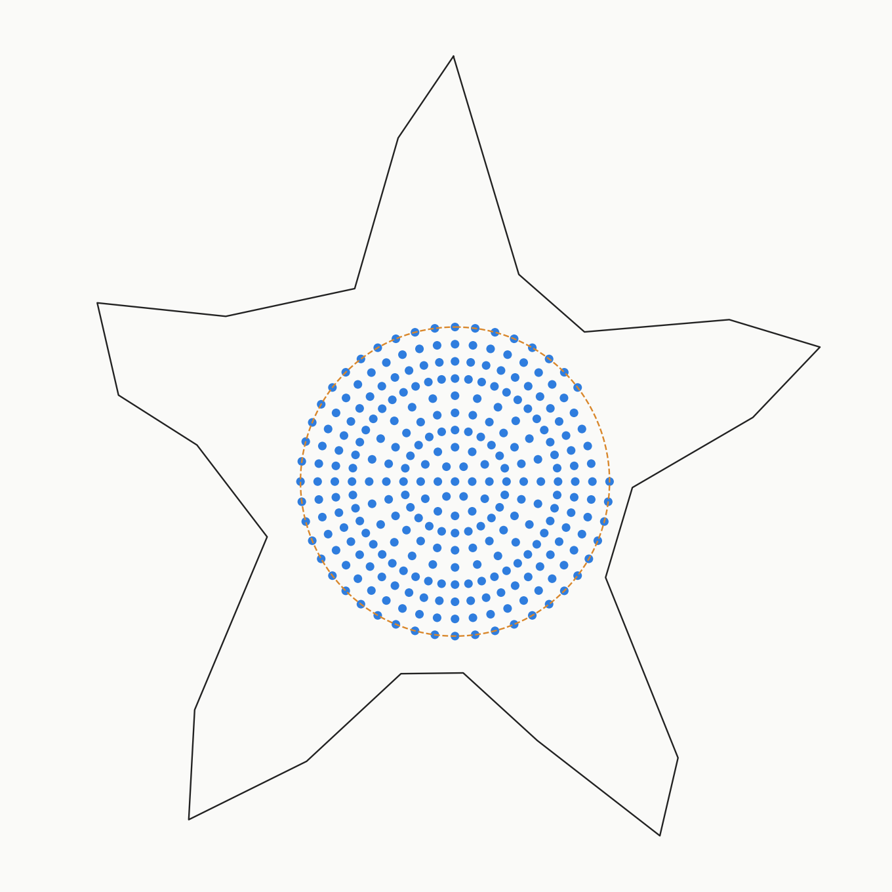
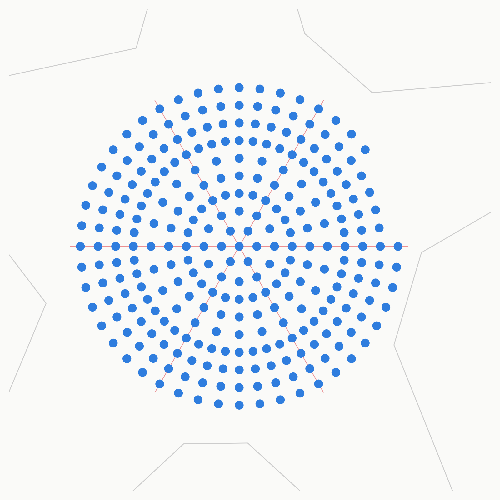

<title>Center matrix — concentric ring layout</title>
<style>
  :root{ --bg:#f6f4f0; --panel:#ffffff; --ink:#1c1b19; --ink-dim:#6b6560; --rule:#ddd7cd; --blue:#2f7dde; --amber:#d9872b; }
  @media (prefers-color-scheme: dark){
    :root{ --bg:#17191b; --panel:#1f2225; --ink:#ece8e1; --ink-dim:#9a948c; --rule:#34383c; --blue:#5b9eef; --amber:#e9a24f; }
  }
  :root[data-theme="dark"]{ --bg:#17191b; --panel:#1f2225; --ink:#ece8e1; --ink-dim:#9a948c; --rule:#34383c; --blue:#5b9eef; --amber:#e9a24f; }
  :root[data-theme="light"]{ --bg:#f6f4f0; --panel:#ffffff; --ink:#1c1b19; --ink-dim:#6b6560; --rule:#ddd7cd; --blue:#2f7dde; --amber:#d9872b; }
  *{box-sizing:border-box;}
  body{ margin:0; background:var(--bg); color:var(--ink); font-family: ui-sans-serif, system-ui, -apple-system, "Segoe UI", sans-serif; display:flex; justify-content:center; padding:2.5rem 1.25rem 4rem; }
  main{ width:100%; max-width:56rem; display:flex; flex-direction:column; gap:1.25rem; }
  h1{ font-family: ui-monospace, "SFMono-Regular", Menlo, Consolas, monospace; font-size:1.1rem; letter-spacing:0.02em; font-weight:600; margin:0; text-wrap:balance; }
  .sub{ color:var(--ink-dim); font-size:0.95rem; max-width:42rem; line-height:1.55; }
  figure{ margin:0; background:var(--panel); border:1px solid var(--rule); border-radius:4px; padding:0.75rem; }
  figure img{ display:block; width:100%; height:auto; border-radius:2px; }
  table{ border-collapse:collapse; width:100%; font-family: ui-monospace, "SFMono-Regular", Menlo, Consolas, monospace; font-size:0.85rem; font-variant-numeric: tabular-nums; }
  th,td{ text-align:left; padding:0.4rem 0.8rem; border-bottom:1px solid var(--rule); }
  th{ color:var(--ink-dim); font-weight:500; font-size:0.72rem; text-transform:uppercase; letter-spacing:0.05em; }
  .panel{ background:var(--panel); border:1px solid var(--rule); border-radius:4px; padding:1rem 1.25rem; overflow-x:auto; }
  ul{ margin:0; padding-left:1.1rem; color:var(--ink-dim); font-size:0.9rem; line-height:1.6; }
  li b{ color:var(--ink); font-weight:600; }
</style>
<main>
  <h1>center matrix &mdash; dartboard spokes, 9 rings, 279 LEDs</h1>
  <p class="sub">
    Single LED at the center, then 9 rings at a constant 2.2&nbsp;mm radial step. Spoke count
    starts at 6 and <b>doubles</b> whenever tangential spacing would otherwise exceed
    &asymp;1.4&times; the target pitch &mdash; each doubling reuses the existing spoke angles and
    interleaves new ones, so 6 spokes run perfectly straight from center to rim, with more
    forking in further out. Lands on 279 with only the outermost ring trimmed (48&rarr;44, &asymp;8%).
  </p>

  <figure>
    
  </figure>

  <figure>
    
    <figcaption>Zoomed check: red lines are the 6 unbroken spokes, overlaid to confirm alignment &mdash; they pass exactly through LED centers at every ring.</figcaption>
  </figure>

  <div class="panel">
    <table>
      <thead><tr><th>ring</th><th>radius (mm)</th><th>spokes</th><th>arc pitch (mm)</th></tr></thead>
      <tbody>
        <tr><td>center</td><td>0</td><td>1</td><td>&mdash;</td></tr>
        <tr><td>1</td><td>2.2</td><td>6</td><td>2.304</td></tr>
        <tr><td>2</td><td>4.4</td><td>12</td><td>2.304</td></tr>
        <tr><td>3</td><td>6.6</td><td>24</td><td>1.728</td></tr>
        <tr><td>4</td><td>8.8</td><td>24</td><td>2.304</td></tr>
        <tr><td>5</td><td>11.0</td><td>24</td><td>2.880</td></tr>
        <tr><td>6</td><td>13.2</td><td>48</td><td>1.728</td></tr>
        <tr><td>7</td><td>15.4</td><td>48</td><td>2.016</td></tr>
        <tr><td>8</td><td>17.6</td><td>48</td><td>2.304</td></tr>
        <tr><td>9</td><td>19.8</td><td>44<span style="color:var(--amber)"> (trimmed from 48)</span></td><td>2.592</td></tr>
      </tbody>
    </table>
  </div>

  <div class="panel">
    <ul>
      <li><b>6 spokes run unbroken from center to rim</b>; 6 more join at ring 3, 24 more at ring 6 &mdash; all stay radially aligned with the originals.</li>
      <li>Arc pitch ranges 1.73&ndash;2.88&nbsp;mm &mdash; a bit less even than the pure-ring version, the tradeoff for spoke alignment.</li>
      <li>Four-layer board handles inner-ring trace escape through vias without issue.</li>
      <li><b>Scrolling text/graphics</b> mapping (ring/spoke &#8594; pixel) is a firmware concern, happy to sanity-check once layout is settled.</li>
    </ul>
  </div>
</main>
